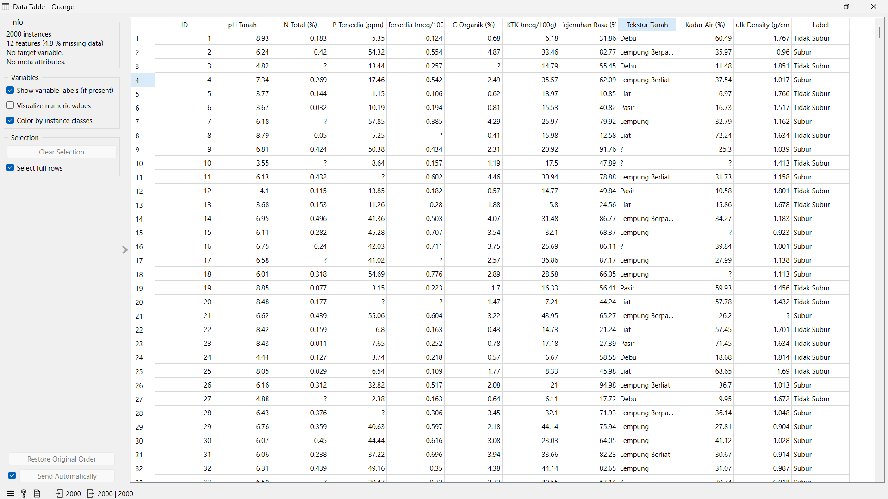
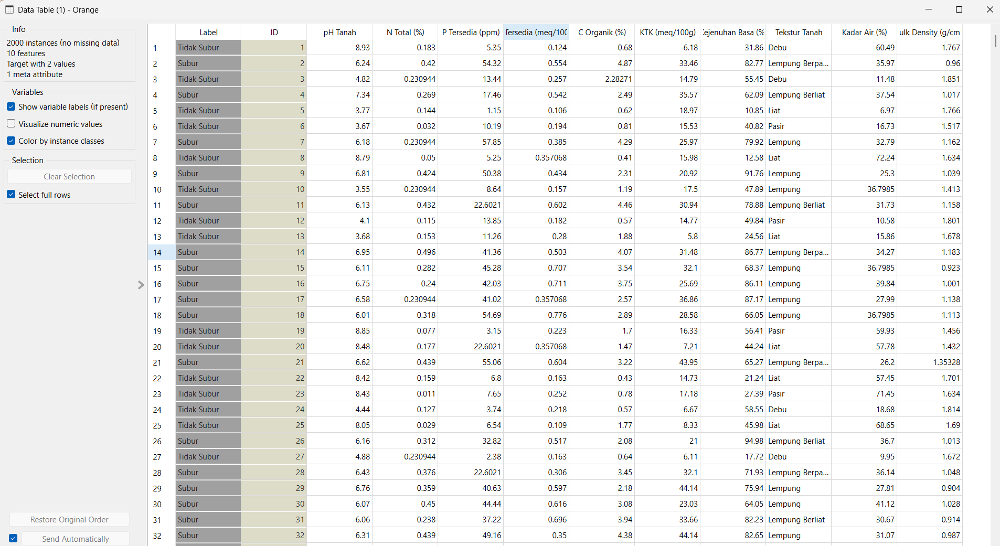
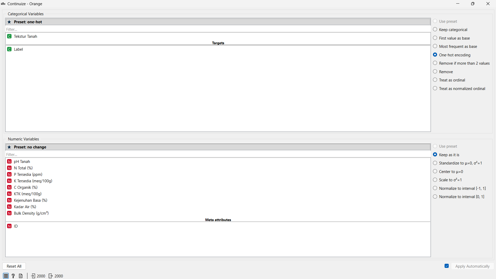
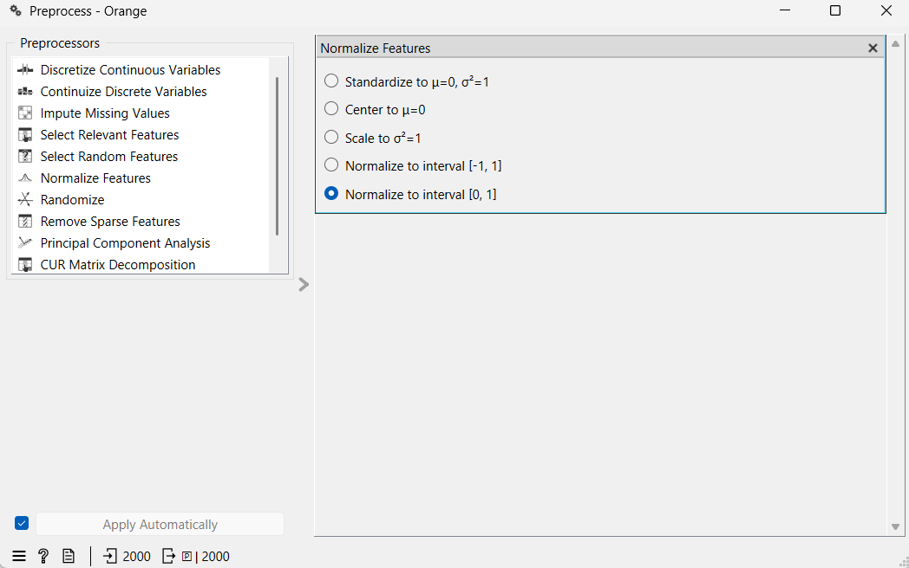
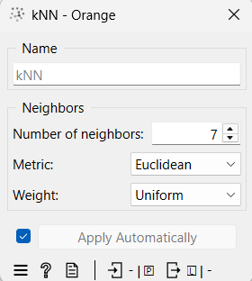
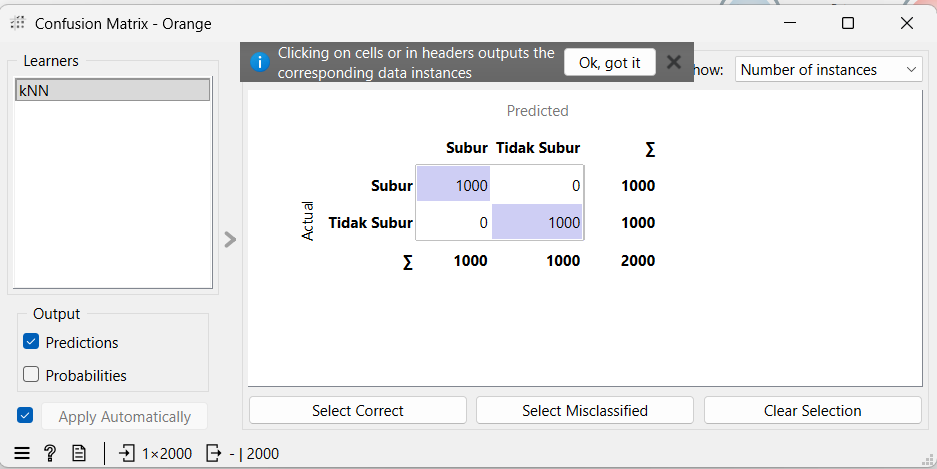
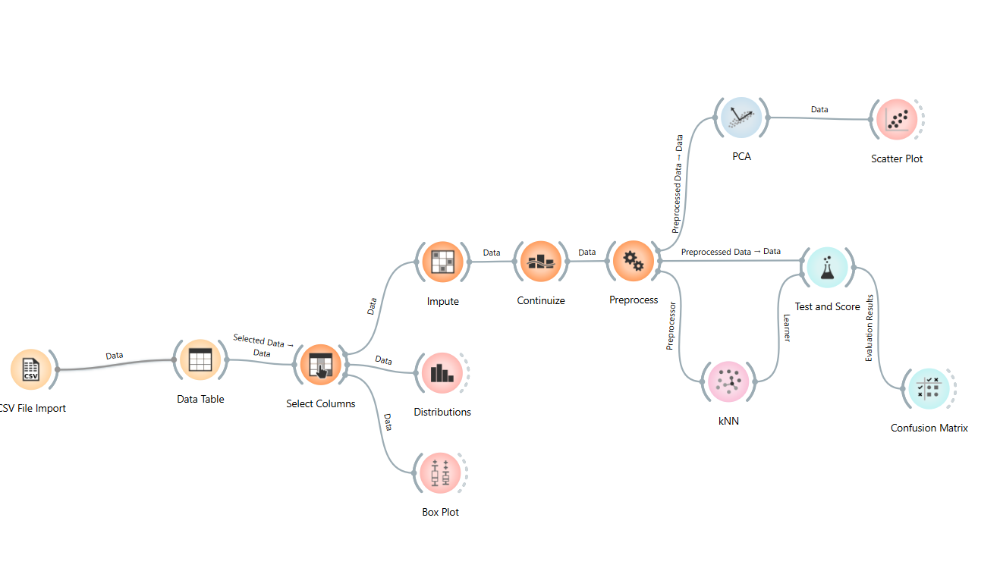

UTS#
Analisis Data Kesuburan Tanah Menggunakan KNN di Orange#
Analisis data kesuburan tanah dilakukan menggunakan algoritma K-Nearest Neighbors (KNN) pada aplikasi Orange Data Mining. Metode ini digunakan untuk mengklasifikasikan tanah ke dalam dua kelas yaitu Subur dan Tidak Subur berdasarkan karakteristik fisik dan kimia tanah.
Tahap Pengolahan Data di Orange#
1. Import Dataset#
Dataset dimasukkan ke Orange menggunakan widget File. Data yang digunakan berisi atribut seperti pH tanah, kandungan nitrogen, fosfor, kalium, kadar air, tekstur tanah, dan label kesuburan tanah.

2. Menangani Missing Value#
Karena dataset memiliki nilai kosong, digunakan widget Impute untuk mengisi missing value secara otomatis. Nilai numerik diisi menggunakan rata-rata, sedangkan data kategorikal diisi menggunakan nilai yang paling sering muncul.

3. Mengubah Data Kategorikal#
Atribut kategorikal seperti tekstur tanah diubah menjadi bentuk numerik menggunakan widget Continuize agar dapat diproses oleh algoritma KNN.

4. Normalisasi Data#
Normalisasi dilakukan menggunakan widget Preprocess agar seluruh atribut memiliki rentang nilai yang seimbang. Langkah ini penting karena KNN menggunakan perhitungan jarak antar data.

5. Proses Klasifikasi KNN#
Setelah data diproses, widget kNN digunakan untuk membangun model klasifikasi. Pada penelitian ini digunakan nilai K = 7, yaitu jumlah tetangga terdekat yang dijadikan dasar dalam menentukan kelas data baru.

6. Evaluasi Model#
Hasil model dievaluasi menggunakan widget Test & Score dengan metode 10-fold cross validation. Evaluasi dilakukan menggunakan Accuracy, Precision, Recall, dan F1-Score untuk mengetahui performa model.
7. Confusion Matrix#
Confusion Matrix digunakan untuk melihat jumlah data yang berhasil diprediksi dengan benar maupun yang salah klasifikasi. Nilai diagonal menunjukkan prediksi yang benar pada masing-masing kelas.

8. Alur Workflow Orange#
